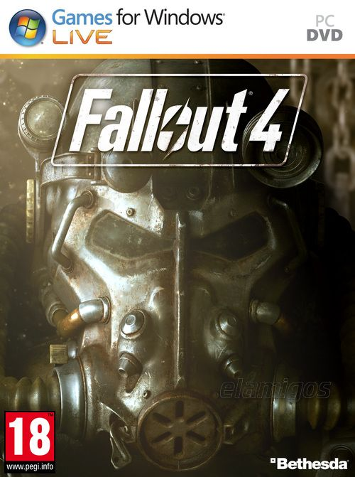

Fallout 4 GOTY v1.10.114 35.2 GB
Género: Shooter, Mundo abierto
Bethesda Game Studios, el galardonado creador de Fallout 3 y The Elder
Scrolls V: Skyrim, os da la bienvenida al mundo de Fallout 4, su juego más
ambicioso hasta la fecha y la siguiente generación de mundos abiertos.
.